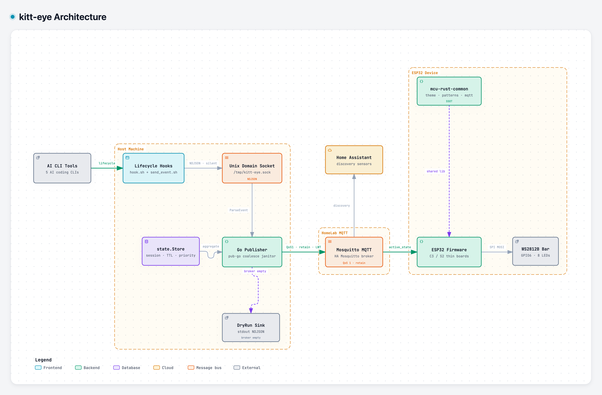

kitt-eye
See when your AI coding agents think, run tools, or wait for you - from across the room.
Motivated by the iconic red scanner of K.I.T.T. from Knight Rider.
In motion
Hooks watch Claude, Codex, Cursor, Antigravity, and Hermes. A Go daemon aggregates state over MQTT onto an ESP32 NeoPixel bar.
How the pieces connect
From CLI lifecycle hooks through Unix socket and MQTT to the WS2812B scanner. Open the interactive diagram for the full map.

Built for the desk, not the dashboard
Fire-and-forget hooks, priority aggregation, and retained MQTT so the bar recovers state on boot.
-
Lifecycle hooks
Read-only observers for five AI CLIs. NDJSON over /tmp/kitt-eye.sock, silent on stdout.
-
Go publisher
Multi-session store with TTL janitor. Collapses many agents into one active_state.
-
MQTT + Home Assistant
QoS 1 retained topics, LWT availability, and MQTT discovery sensors.
-
ESP32 scanner
Rust firmware on C3 or S2 drives an 8-LED WS2812B bar in classic red or colorful themes.
Get the bits
Source, printable mount, and the live architecture viewer.